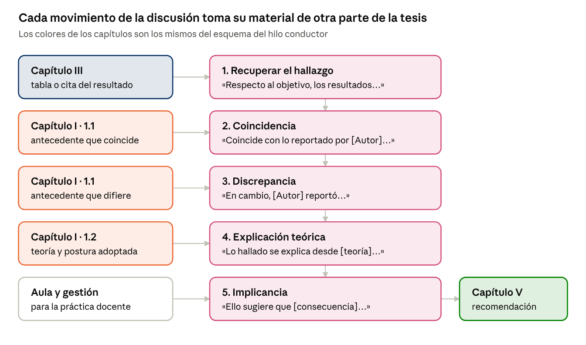

Parte II · Guía de redacción sección por sección
12. Capítulo IV: Discusión
La discusión pone cada hallazgo en diálogo con los antecedentes y la teoría del Capítulo I: dice en qué coincide, en qué difiere, por qué y qué significa para la enseñanza. Es el capítulo que muestra el criterio del investigador. Extensión orientativa: 5 a 10 páginas.
| Plantilla | Contenido |
|---|---|
| 4.1 | 4.1. Discusión por objetivos: 4.1.1 objetivo general; 4.1.2 en adelante, objetivos específicos (y categorías emergentes) |
| 4.2 | 4.2. Discusión integradora: qué dicen los hallazgos en conjunto |
| 4.3 | 4.3. Limitaciones y fortalezas del estudio |
Nota. Elaboración propia.
12.1. Los cinco movimientos por objetivo

Si un movimiento no tiene de dónde sacar su material (por ejemplo, no hay antecedente que discrepe), se dice explícitamente en lugar de inventar la comparación. Elaboración propia.
1. Recuperar el hallazgo. Respecto al objetivo {general / específico [N]}, los resultados evidenciaron que [HALLAZGO CON SU DATO].
2. Coincidencia. Este resultado coincide con lo reportado por [AUTOR (AÑO)], quien en [CONTEXTO] halló [DATO DEL ANTECEDENTE].
3. Discrepancia. En cambio, [AUTOR (AÑO)] reportó [DATO DISTINTO]; esta diferencia podría explicarse por [CONTEXTO, MUESTRA, INSTRUMENTO o DISEÑO].
4. Explicación teórica. Lo hallado se explica desde [TEORÍA] de [AUTOR (AÑO)], que sostiene que [POSTULADO].
5. Implicancia. Ello sugiere que [CONSECUENCIA PARA LA PRÁCTICA DOCENTE o LA GESTIÓN ESCOLAR].
12.2. Discusión integradora
En conjunto, los hallazgos permiten afirmar que [LECTURA GLOBAL]. Las dimensiones [D1] y [D2] mostraron [PATRÓN COMÚN], mientras que [D3] [DIFERENCIA]. Esta configuración sugiere que [INTERPRETACIÓN DE CONJUNTO], lo que aporta a la comprensión de [VARIABLE] en contextos [TIPO DE CONTEXTO].
12.3. Limitaciones y fortalezas
Entre las limitaciones del estudio, destaca [LIMITACIÓN: TAMAÑO O TIPO DE MUESTRA, DISEÑO, INSTRUMENTO], lo que impide [ALCANCE QUE NO SE PUEDE AFIRMAR]. No obstante, el estudio presenta como fortaleza [FORTALEZA], lo que otorga solidez a [HALLAZGO].
| Diseño | Expresiones adecuadas | Expresiones que se evitan |
|---|---|---|
| Descriptivo | predomina, se ubica, se caracteriza por | causa, explica, determina |
| Correlacional | se asocia con, se relaciona con, tiende a | influye en, impacta, provoca |
| Experimental o cuasiexperimental | produjo un efecto, mejoró significativamente | demuestra para siempre, en todos los casos |
| Cualitativo | sugiere, revela, se interpreta como, en este caso | se generaliza, siempre, todos los docentes |
Nota. Elaboración propia.
Reglas de la discusión
- Solo se citan autores ya presentados en el Capítulo I; la discusión no introduce teoría nueva.
- Las comparaciones usan cifras o hallazgos concretos del antecedente, no solo «coincide con».
- No se repiten tablas ni se presentan resultados nuevos.
- Se discute el hallazgo; no se resume otra vez el antecedente completo.